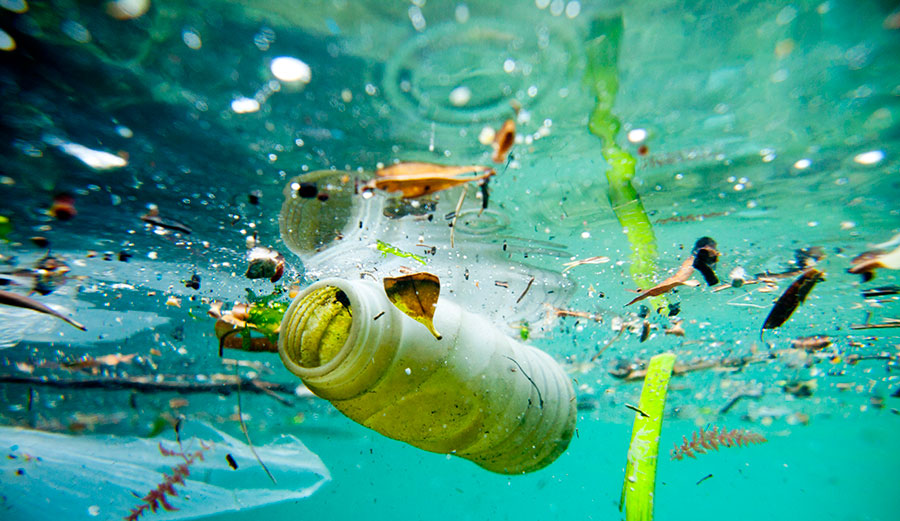

The ocean plays an essential role for life on earth: it provides over 70 percent of the oxygen that we breathe today. Moreoever, it also provides over 97 percent of the world's water supply. 30 percent of the CO2 emissions produced by humans are absorbed by the oceans. However, we are not doing a good job to try to preserve the ocean as it is. Everyday, the ocean is threatened because of manmade pollution. Pollution does not only affect marine life, but also affects us makind.

The reason why marine pollution affects mankind is because the fish/seafood we consume today contain BPA from the plastic that the marine animals consume. This means that we are eating the trash that we produced ourselves. Therefore, we are consuming the trash that we produce ourselves.
Chemicals such as oil, mercury, lead, pesticides, and other heavy metals can all be found within the marine animals and can contaminate water supplies and our food chain. If humans are exposed to these toxic chemicals, this can result in dangerous health problems.